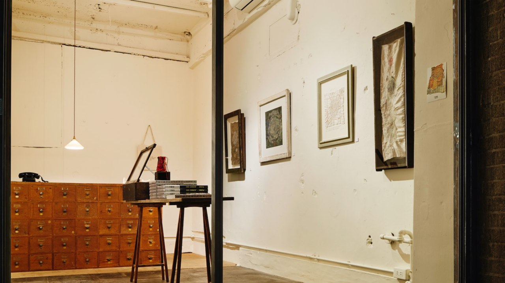

Простота — такое же сильное преимущество как и дизайн (они связаны). Хороший дизайн стремится к простоте. Простота стремится к хорошему дизайну. Так же как и с дизайном, простоту мало кто использует как стратегию. Давайте рассмотрим понятие простоты шире.
Во всем живом есть врожденная способность выбирать путь наименьшего сопротивления, чтобы тратить меньше энергии и ресурсов. Мы стремимся минимизировать средства и усилия для достижения целей.
С другой стороны, мир постоянно усложняется: появляются новые технологии, дисциплины расщепляются на более мелкие. Людям трудно мыслить просто. Но мы любим простые вещи, потому что нашему мозгу легче их воспринимать, так как ему не приходится прилагать усилия. Жизнь очень сложная, а простота так редко встречается. Мы ценим и быстро привыкаем к тому, что облегчает нашу жизнь.
По умолчанию все выходит сложным, и нужно сильно постараться, чтобы добиться простоты.
Отличной визуализацией примера, как люди тянутся к простоте, будет книжный магазин Morioka Shoten Ginza в Японии. Они выбрали концепцию продажи всего одной книги, которую меняют каждую неделю. Это интересно, необычно, радикально, а главное — просто. Все тиражи распродаются, и людям не нужно выбирать из множества книг какую купить — выбор максимально упрощен.
В ближайших постах рассмотрим, как простота может помочь добиться преимущества на уровне стратегии, продуктов, коммуникации и культуры.
